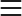

<mat-sidenav-container>
    <mat-sidenav #sidenav mode="side" opened="isExpanded" [ngClass]="(userLoggedInFlag) ? '' : 'hide-nav'">
      <mat-nav-list>
  
        <!-- <mat-list-item (click)="isExpanded = !isExpanded"> -->
        <mat-list-item (click)="menuExpansion(isExpanded)">
          <!-- <mat-icon mat-list-icon class="chevron-button" [ngClass]="{ rotated: isExpanded }">chevron_right
          </mat-icon> -->
          <span class="icon-holder" >
            
          </span>
        </mat-list-item>
  
        <mat-list-item>
          <!-- <mat-icon mat-list-icon>home</mat-icon> -->
          <span class="icon-holder" (click)="isExpanded = !isExpanded">
            
          </span>
          <div *ngIf="isExpanded" class="menu-item" (click)="subMenuClick('user')">
              <span>
                User
              </span>
              <mat-icon mat-list-icon class="chevron-button">expand_more</mat-icon>
            </div>
        </mat-list-item>

        <ng-container *ngIf="userSubMenu">
          <mat-list-item [routerLink]="'dashboard'">
            <span *ngIf="isExpanded" class="sub-menu-item">User Profile</span>
          </mat-list-item>
          <mat-list-item [routerLink]="'dashboard'">
            <span *ngIf="isExpanded" class="sub-menu-item">Quotation History</span>
          </mat-list-item>
          <mat-list-item [routerLink]="'dashboard'">
            <span *ngIf="isExpanded" class="sub-menu-item" (click)="logout()">Logout</span>
          </mat-list-item>
        </ng-container>
        


  
        <mat-list-item>
          <!-- <mat-icon mat-list-icon>important_devices</mat-icon> -->
          <span class="icon-holder" (click)="isExpanded = !isExpanded">
            
          </span>
          <span *ngIf="isExpanded" class="menu-item" (click)="subMenuClick('dashboard')">
            <span>
              Dashboard
            </span>
            <mat-icon mat-list-icon class="chevron-button">expand_more</mat-icon>
          </span>
          
        </mat-list-item>

        <ng-container *ngIf="dashboardSubMenu">
          <mat-list-item [routerLink]="'dashboard'">
            <span *ngIf="isExpanded" class="sub-menu-item">Dashboard</span>
          </mat-list-item>
          <mat-list-item [routerLink]="'dashboard'">
            <span *ngIf="isExpanded" class="sub-menu-item">Accounts</span>
          </mat-list-item>
          <mat-list-item [routerLink]="'dashboard'">
            <span *ngIf="isExpanded" class="sub-menu-item">Quotations</span>
          </mat-list-item>
          <mat-list-item [routerLink]="'dashboard'">
            <span *ngIf="isExpanded" class="sub-menu-item">Add New Feature</span>
          </mat-list-item>
        </ng-container>
  
        <mat-list-item>
          <!-- <mat-icon mat-list-icon>supervisor_account</mat-icon> -->
          <span class="icon-holder" (click)="isExpanded = !isExpanded">
            
          </span>
          <span *ngIf="isExpanded" class="menu-item" (click)="subMenuClick('security')">
            <span>
              Security
            </span>
            <mat-icon mat-list-icon class="chevron-button">expand_more</mat-icon>
          </span>
        </mat-list-item>

        <ng-container *ngIf="securitySubMenu">
          <mat-list-item [routerLink]="'dashboard'">
            <span *ngIf="isExpanded" class="sub-menu-item">Recommendations</span>
          </mat-list-item>
        </ng-container>
  
      </mat-nav-list>
    </mat-sidenav>
  
    <!-- Content - rendered Content for the current router path into the <router-outlet>, e.g. /dashboard or /info-->
    <mat-sidenav-content>
      <!-- <mat-toolbar>
        <h4>Hello everyone</h4>
      </mat-toolbar> -->
      <router-outlet></router-outlet>
    </mat-sidenav-content>
  
  </mat-sidenav-container>